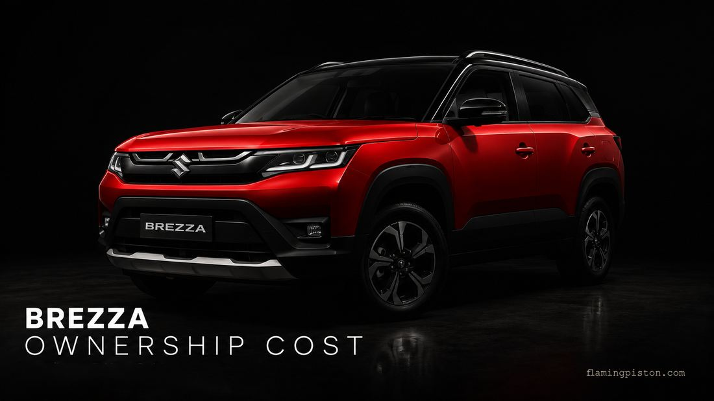

Maruti Brezza Maintenance Cost: Service, Insurance & 5-Year Ownership Explained

Image: FlamingPiston
The Brezza's reputation for low running costs isn't marketing — it holds up when you run the actual numbers. Over 5 years and roughly 60,000km, most Brezza owners spend ₹25,000–30,000 on scheduled servicing. That's less than one month's EMI on the ZXi Plus AT. But service costs are only one part of the picture. Add insurance, tyres, and incidental wear items, and the number looks different. This guide puts the full 5-year cost in one place, broken down honestly by variant and powertrain.
Service schedule and cost per visit
Maruti's service interval for the Brezza is every 10,000km or once a year, whichever comes first. The first service at 1,000km is a free inspection — no charge. From there, costs step up with the complexity of each service.
| Service interval | Key work done | Estimated cost (incl. labour + GST) |
|---|---|---|
| 1,000km (free) | Multi-point inspection, fluid top-up | ₹0 |
| 10,000km (1st paid) | Engine oil + filter, air filter check, brake inspection | ₹2,500–3,000 |
| 20,000km | Engine oil + filter, air filter replace, fuel filter check | ₹4,500–6,000 |
| 30,000km | Engine oil + filter, spark plug check, brake fluid check | ₹3,000–4,500 |
| 40,000km | Engine oil + filter, air filter replace, coolant top-up, spark plug replace | ₹5,000–7,000 |
| 50,000km | Engine oil + filter, full inspection, brake fluid replace | ₹4,000–5,500 |
These are estimated ranges inclusive of labour and GST at an authorised Maruti service centre. Costs in metros (Mumbai, Delhi, Bengaluru) trend toward the upper end of each range; smaller cities and Tier-2 towns typically fall at the lower end. The 5-year total assuming average annual mileage of 12,000km comes to approximately ₹25,000–30,000 for scheduled services alone.
Does the powertrain change service costs?
Yes — but not dramatically.
1.5L naturally aspirated petrol (standard Brezza): The base case. Uses 5W-30 semi-synthetic engine oil. Most economical to service. The K15C engine is Maruti's most widely serviced unit in India — parts are plentiful, and technicians know it cold.
1.0L turbo petrol: Requires a higher-grade 0W-20 fully synthetic oil, which costs roughly ₹300–500 more per oil change than the semi-synthetic. The turbo benefits from not letting the engine idle immediately after a hard highway run — a habit worth building but not a cost factor. Over 5 years the additional cost is roughly ₹2,000–3,000 against the 1.5 NA.
CNG: The CNG variant's underbody tank design (no boot intrusion) means there's no additional boot disassembly needed during service. CNG-specific checks — injector health, gas pipe integrity, valve condition — add one service line item every 20,000km. Budget an additional ₹500–800 per service for CNG-specific work. The trade-off is that CNG's per-km running cost drops substantially — covered in the 5-year cost table below.
Wear and tear items — when they hit
Scheduled servicing is the predictable part. The bigger costs in ownership come from items that wear out outside the service schedule.
| Item | Expected replacement interval | Estimated cost (parts + labour) |
|---|---|---|
| Tyres (set of 4, 215/60 R16) | 35,000–45,000km depending on driving style | ₹18,000–26,000 |
| Brake pads (front pair) | 40,000–60,000km | ₹2,500–4,000 |
| Brake pads (rear pair) | 60,000–80,000km | ₹2,000–3,500 |
| 12V battery | 3–5 years | ₹4,500–6,500 |
| AC cabin filter | Every 15,000–20,000km | ₹400–700 |
| Wiper blades | Annually or as needed | ₹400–800 |
| Clutch (manual, aggressive use) | 80,000–1,20,000km | ₹8,000–14,000 |
Tyre cost is the single largest wear item. The Brezza runs 215/60 R16 tyres. A full set of four mid-range tyres (Apollo, Ceat, or MRF equivalents) costs approximately ₹18,000–22,000 fitted, rising to ₹24,000–26,000 for premium brands like Michelin or Bridgestone. Most Brezza owners need one set of tyres in the first 5 years if driving is predominantly city-highway mixed. City-heavy drivers with frequent hard braking may need replacement closer to 35,000km.
Insurance: what to expect
First-year comprehensive insurance for the 2026 Brezza is mandatory and built into the on-road price — your dealer handles it. The important number is what renewal costs in year 2 onwards.
A comprehensive policy for the VXi manual variant (mid-range IDV, Delhi registration) typically runs ₹18,000–23,000 in year 1. With a No Claim Bonus (NCB) of 20% in year 2, 25% in year 3, and up to 50% by year 6, the renewal premium drops significantly if you don't claim. By year 4, a clean-record Brezza owner typically pays ₹10,000–14,000 annually for comprehensive coverage.
| Year | NCB discount | Approx. comprehensive premium (VXi, Delhi) |
|---|---|---|
| Year 1 | 0% | ₹18,000–23,000 |
| Year 2 | 20% | ₹15,000–18,500 |
| Year 3 | 25% | ₹14,000–17,000 |
| Year 4 | 35% | ₹12,000–15,000 |
| Year 5 | 45% | ₹10,000–13,500 |
These are indicative ranges — actual premiums vary by insurer, city, IDV chosen, and add-ons selected. The figures above assume comprehensive cover with basic add-ons (zero depreciation on years 1–2, engine protect). Higher variants (ZXi Plus) have a higher IDV and therefore higher premiums.
Recommended add-ons for Brezza owners: Zero depreciation cover is worth it in years 1–3 when the car's value is high and parts costs are steep in any accident. Engine protect is useful if you drive in a city with frequent waterlogging. Return to Invoice is optional — relevant only if you're financing the car at close to on-road price.
Should you buy Maruti's prepaid service plan?
Maruti offers prepaid Annual Maintenance Contracts (AMCs) that lock in labour rates at the time of purchase and typically discount the package by 10–15% versus paying per service. The plans cover scheduled services and include some consumables.
It's worth it if you plan to keep the car beyond 40,000km and service it exclusively at Maruti authorised centres. Labour rates at authorised centres rise gradually, so locking in today's rates protects against future increases. It's not worth it if you're likely to sell before the 3-year/36,000km mark, or if you prefer independent workshops — where costs are often 20–30% lower than authorised centres for equivalent work, though genuine parts may vary.
The Maruti service network advantage — what it's actually worth
Maruti has over 3,500 service outlets across India — more than any other manufacturer. In a Tier-1 city this matters less. In a Tier-2 or Tier-3 town, it matters a lot. A Brezza owner in Nagpur, Coimbatore, or Ranchi will find an authorised Maruti centre closer to home than an authorised Tata or Hyundai outlet. This translates to: lower transport cost if the car needs towing, faster turnaround times, and cheaper genuine spare parts due to economies of scale in Maruti's supply chain. Maruti spare parts are also the most widely available in the Indian aftermarket — which matters if you ever use an independent workshop.
5-year total cost of ownership
The table below models ownership over 5 years and approximately 60,000km for the VXi manual petrol variant — the most commonly bought configuration.
| Cost category | 5-year estimate |
|---|---|
| Scheduled servicing (5 services) | ₹25,000–30,000 |
| Insurance (5 years, reducing NCB) | ₹70,000–85,000 |
| Tyres (1 set at ~40,000km) | ₹18,000–22,000 |
| Battery replacement (year 4–5) | ₹5,000–6,500 |
| Brake pads, filters, misc. wear | ₹6,000–10,000 |
| Total maintenance cost | ₹1,24,000–1,53,500 |
| Fuel (petrol, 15 km/l city avg, ₹100/l, 60,000km) | ₹4,00,000 |
| Total running cost (5 years) | ₹5,24,000–5,53,500 |
At 60,000km over 5 years, that works out to roughly ₹8.7–9.2 per km in total running cost for the petrol VXi manual — including insurance, servicing, tyres, and fuel. Exclude fuel and the ownership cost alone is approximately ₹2.0–2.6 per km.
CNG comparison: CNG running cost at current CNG pump prices (approximately ₹75–85/kg in most cities, 26.90 km/kg ARAI) works out to roughly ₹2.8–3.2 per km on fuel alone — versus ₹6.5–7 per km for petrol at current prices. Over 60,000km, CNG saves approximately ₹2,10,000–2,50,000 in fuel costs. The CNG variant costs ₹95,000 more than the equivalent petrol variant — the fuel savings break even at around 25,000–30,000km, making CNG the mathematically stronger choice for anyone driving more than 1,500km per month.
Brezza vs Nexon: maintenance cost comparison
The Tata Nexon is the Brezza's most direct rival, and the question of which costs more to maintain comes up constantly. The honest answer: the Brezza has a small but real edge.
Scheduled service costs are comparable — Nexon's 5-year estimate runs approximately ₹27,000–33,000 versus Brezza's ₹25,000–30,000. The more significant difference is in network accessibility and spare parts economics. Tata has substantially expanded its service network in recent years, but Maruti's density in smaller cities and towns remains unmatched. Genuine Maruti spare parts are also typically 10–20% cheaper than equivalent Tata parts for comparable items. Over 5 years this difference compounds — not dramatically, but it's real.
The Nexon's advantage is its 5-star Bharat NCAP rating and stronger diesel and EV options, which the Brezza doesn't offer. If your priority is pure maintenance economy, the Brezza wins on points. If you want a diesel or a body-on-frame safety advantage, the Nexon's higher running cost is the price of those gains. We've compared the two in full in our Brezza vs Nexon head-to-head.
Flaming Piston's Take
The Brezza's ownership costs are genuinely low — not just on paper. Scheduled servicing under ₹30,000 over 5 years is hard to beat in the compact SUV segment, and Maruti's service network means you're rarely more than 15km from an authorised centre anywhere in India. The real costs to budget for are insurance (which adds ₹70,000–85,000 over 5 years), tyres (one full set around the 40,000km mark), and — if you drive hard in stop-go traffic — brake pads. If you're choosing between the petrol and CNG, the CNG breaks even on its ₹95,000 price premium at around 25,000–30,000km and saves meaningfully beyond that. For most buyers driving 15,000+km annually, CNG pays for itself within two years. The turbo petrol costs marginally more to service but the difference is negligible over a 5-year horizon — choose it for the performance, not against it for the maintenance.
This guide is most useful if:
- You're deciding between petrol, turbo, or CNG and want the running cost picture
- You're comparing Brezza ownership cost against Nexon or Venue
- You want to budget monthly ownership cost before signing the loan
Frequently asked questions
What is the annual maintenance cost of the Maruti Brezza?
Typically ₹3,000–6,500 per year for scheduled servicing, depending on which service interval falls that year. The 40,000km service (with spark plug replacement and full air filter change) is the most expensive single visit. Over 5 years, total scheduled service costs run approximately ₹25,000–30,000.
Is the Brezza cheaper to maintain than the Tata Nexon?
Marginally, yes. Service costs are similar but Maruti's parts are typically 10–20% cheaper and the service network is significantly larger. The Nexon offers diesel and EV options which the Brezza doesn't, so it depends what you're cross-shopping on.
What is the insurance cost for the Brezza?
First-year comprehensive insurance is included in the on-road price. Renewal in year 2 typically runs ₹15,000–18,500 for a mid-variant with 20% NCB. By year 5 with clean records and 45% NCB, expect ₹10,000–13,500 annually. Higher variants have higher IDV and proportionally higher premiums.
Does the turbo Brezza cost more to maintain?
Marginally — about ₹300–500 extra per service due to the higher-spec synthetic oil the turbo engine requires. Over 5 years the total difference is approximately ₹2,000–3,000 versus the 1.5 NA petrol. Not a reason to avoid it.
Sources: CarDekho service cost data; ZigWheels service schedule; Spinny ownership cost guide; RideNRepair 2026 service guide; independent cross-verification across multiple sources. All cost figures are estimates — actual costs vary by city, workshop, and usage pattern.
Back to where you came from